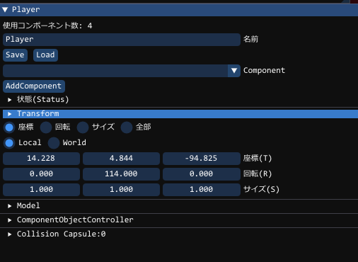
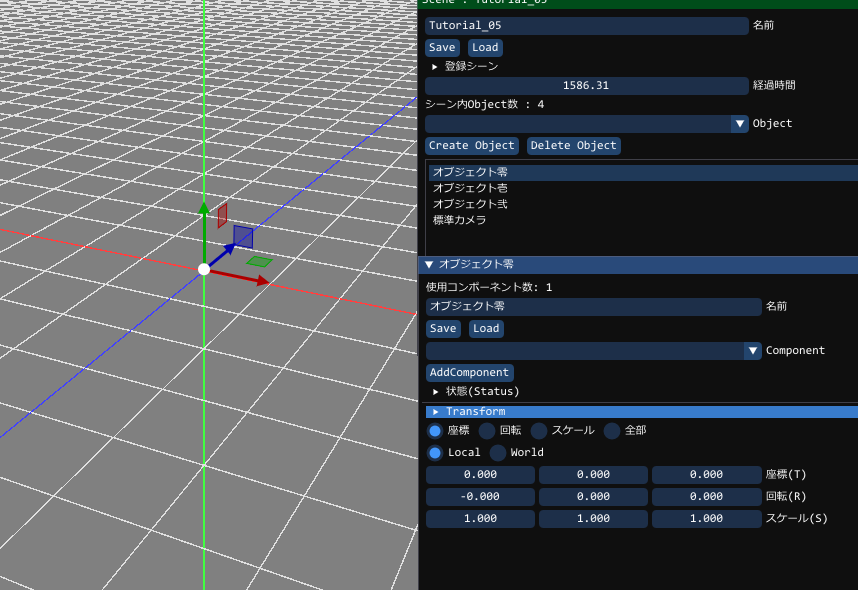
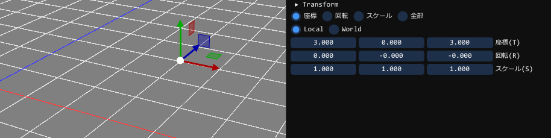
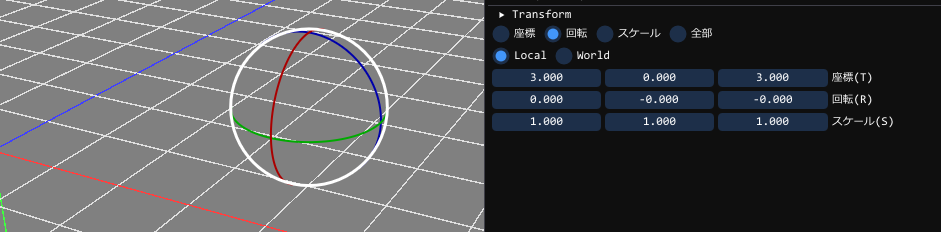
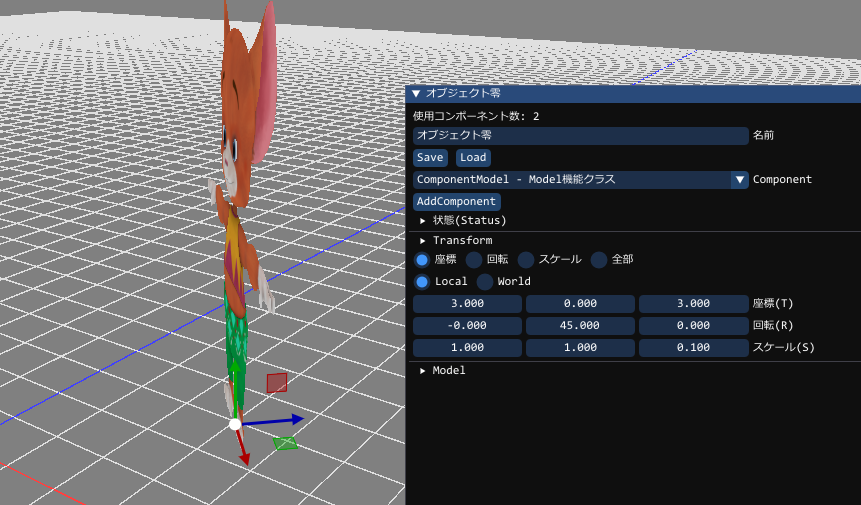

ComponentTransform(位置と姿勢のコンポーネント)
Object(オブジェクト)は作成段階にて、ComponentTransformを持っており、オブジェクト自身を座標や回転、スケールの操作をすることができます。
GUI内で、「▶Transform」というところがあります。

上記では、Playerというオブジェクトの座標、回転、スケールが設定できますTutorial_05の動作を確認する
ALT-MENUにて、「Tutorial_05」を選択してみましょうこのシーンでは、オブジェクトが既に3つ存在しています。
軸は、赤・緑・青 (色の三原色に合わせてある)としています
矢印の方向がプラス方向で、左から(X,Y,Z)と並んでいます。

座標(T)
オブジェクトの位置です。グローバル座標系の位置を示します。以下の例は、X=3, Y=0, Z=3 の位置に設定しています。

回転(R)
オブジェクトの回転です。グローバル座標系での回転を示します。以下の例は、X軸=0度, Y軸=0度, Z軸=0度 の回転(回転してない状態)に設定しています。

スケール(S)
オブジェクトのスケールです。ローカル座標系でのスケールを示します。以下の例は、X軸=1.0倍, Y軸=1.0倍, Z軸=0.1倍 として、奥行きの厚みをなくしている状態に設定しています。
